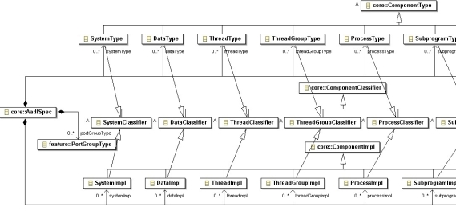
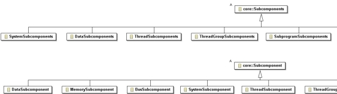
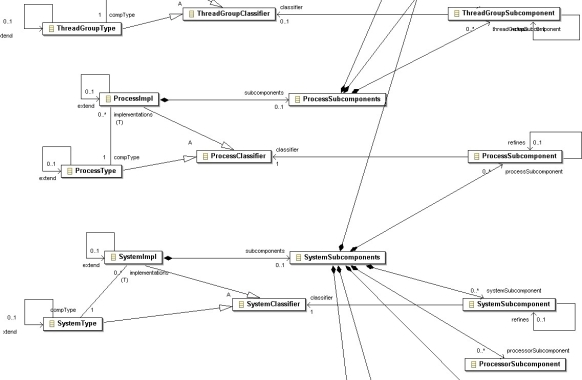

Previous
Next
Previous
Next 
| 4.4 Category-Specific Meta Model Classes |
The AADL meta model has a separate class for each category-specific
component type,
component implementation, and subcomponent. These are concrete classes that get instantiated
as objects of that class in the AADL object model.
These category-specific classes are used to model the
fact that component implementations of a
specific category must be implementations of a component type of the same category. They are
used to model the fact that component types of a certain category can only contain certain
features. They are also used to model the fact that component implementations of a certain
category can only contain subcomponents of certain categories. The category-specific classes are
used to model whether a component may or may not contain connections or call sequences. They
may also be used to represent other restrictions expressed in the table of the Legality Rules
section of each component category in the Standard.

Figure 17 Category-Specific Classes
Figure 17 partially shows the category-specific classes
and their subclass relationships in terms of
component classifier, component type, and component implementation. In addition the figure
shows that all category-specific classifiers, as well as port group types, can be declared in AADL
specifications. A similar containment relationship is defined for AADL public and private package
sections. The use of category-specific labels in the containment association results in XML
element tags that reflect the category, e.g., the XML element tag <systemType> in Figure
6.

Figure 18 Category-specific Subcomponent Classes
Figure 18 partially shows the category-specific Subcomponents
and Subcomponent classes as
concrete subclasses. These classes are used to in Figure 19 to limit the categories of
subcomponents that can be contained in each component category.

Figure 19 Component Category Specific Class Relationships
Figure 19 shows the containment and reference associations
for a subset of category-specific
classes. They are shown for the process and system categories. Both the SystemImpl
class and
ProcessImpl class has a compType reference association to its respective type class.
This
ensures that component implementations reference only component types of their own category.
Each of these compType reference associations specializes the compType reference association
of ComponentImpl. This means that the XML attribute name in both cases is compType, but
the
reference is restricted to the appropriate component type category.
Figure 19 reflects the constraints on the categories
of subcomponents that are legal in a given
component category implementation. For example, the system implementation contains a
SystemSubcomponents class – the representative of the subcomponents subclause. Similarly,
the SystemSubcomponents class has containment associations to those category-specific
Subcomponent classes that are legal for a system implementation.